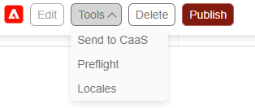
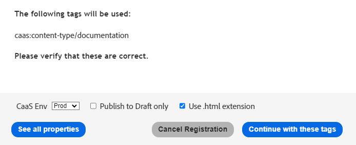
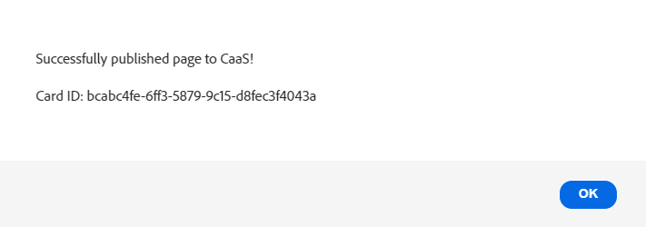

Introduction to CaaS - Authoring in Milo
The following is a brief introduction to the Milo authoring tools and publishing workflows for the CaaS platform. For a more detailed information, features and schedules, please visit the CaaS Wiki page.
Create or Edit a Card in Milo
To create or edit a new card in Milo, follow these steps:
- Create a new page in Milo in the desired location
- Open the Milo Library from the AEM sidekick on the top of the page
- From the Blocks section, select
Caas Card Metadata and copy and paste into your Milo document - Modify or create new metadata rows as needed
Available metadata options
Here is an example of one of the card styles that can be created with CaaS and its metadata options:

The following are the most common metadata Milo block options for a basic card:
| Card-Metadata | |
|---|---|
| CardImage | Enter URL or paste image |
| CardTitle | Card title goes here |
| Description | Card description goes here |
| CTAText | Text to be disaplyed in the CTA |
| CTAURL | Destination URL for the CTA.
Note: If no URL is provided it will default tot the current page |
Note: The metadata names are not case sensitive, but the values are.
For a more detail list of metadata options, please visit the CaaS Milo Documentation.
Send to CaaS
Once you have created, or edited, a card in Milo using the Card Metadata block as explained in the previous section, you can send it to CaaS so that it is available via the Chimera backend services and can be rendered in a CasC Card Collection.
Follow these steps:
Once the metadata block is ready, click on the Preview button on the AEM sidekick bar.
> Depending on the page content, a new blank page will be displayed in the main--milo-adobe.com preview serverProTip: A hidden div will be rendered with the card's metadata information used by the Send to CaaS script.
- In the preview page click on the Publish button on the AEM sidekick bar.

> A new blank page will be displayed in the milo.adobe.com publish server - In the AEM sidekick, select Tools > Send To Caas.

> If everything is OK you will get to the confirmation page where you can:

See All Properties - ProTip unique Ids can be seeing here withough the need to publish the card.
Send to Caas - Click Continue with these tags to send the data to CaaS.
You should see a success message like this:

You are done!
For a more detail list of metadata options, please visit the CaaS Wiki page.
Create a Card Collection
Card collections are created in the Milo Configurator tool. This tool allows you to quickly create and visualize a collection of cards that can be used in a variety of ways, such as a carousel or a grid.
For a more detail list of metadata options, please visit the Milo Configurator Documentation or access specific topics from the manu in the left panel of this page.
To create a new card collection, follow these steps:
- Open the Milo Caas Configurator tool
Note: The tool has a default set of values you can modify to meet your needs, or it loads the last settings used. - In the Basics tab select:
Source: Your desired source for the caontent or leave blank to pull from all sources
Results Per Page: As specified in your designs or comps. Tupically 4 for a carousel and 12 for a grid
Total Cards to Show: up to 2000. - In the Cards tab, click on Featured Cards > Add
- Paste the card's unique ID into the text field
Preview a Card in Different Styles
To preview a card in different styles using the Milo configurator you need to know the unique ID of the card you want to preview. The card's unique ID can be seeing during the Send To Caas workflow.
- Open the Milo Caas Configurator tool
- In the Basics tab select:
Source: none
Results Per Page: 1
Total Cards to Show: 1 - In the Cards tab, click on Featured Cards > Add
- Paste the card's unique ID into the text field
For a more detail list of metadata options, please visit the CaaS Milo Documentation.
Using the Bulk Publisher
In progress...
The Bulk publisher in Milo
allows to send multiple pages to CaaS at the same time.
For a more detail list of metadata options, please visit this Wiki page.